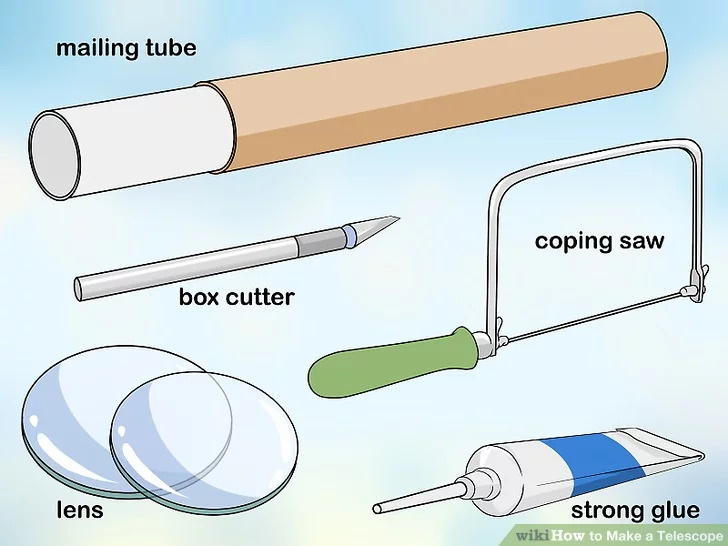
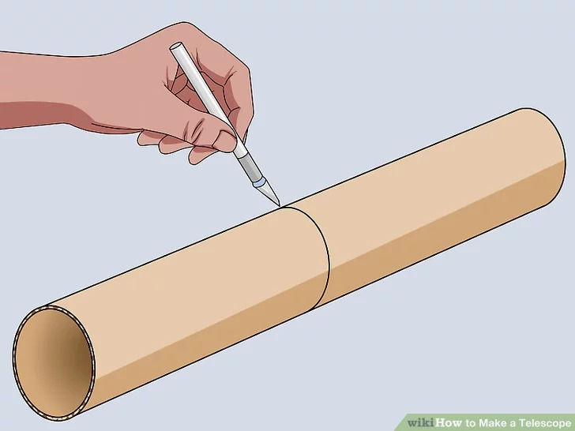
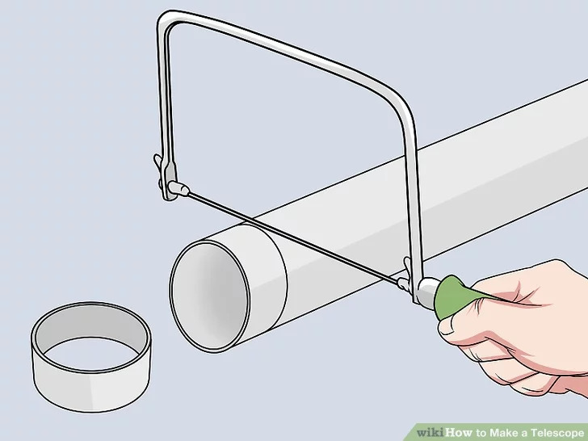
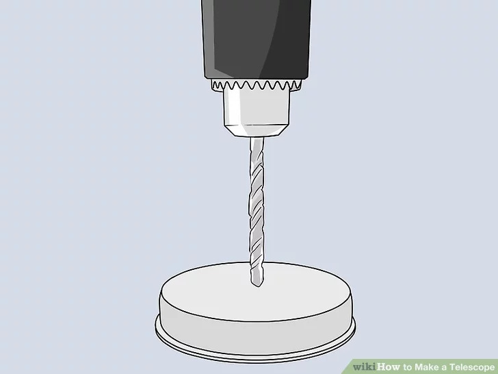
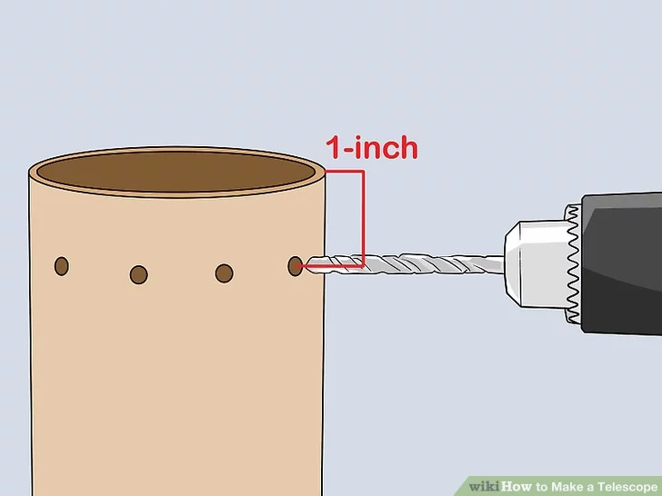
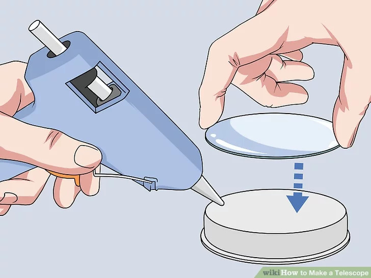
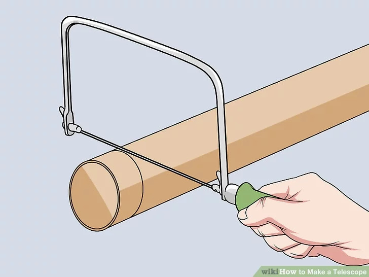
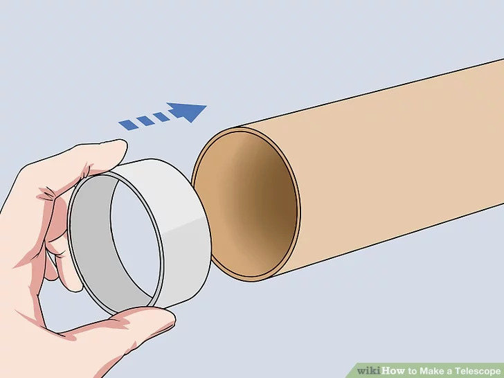
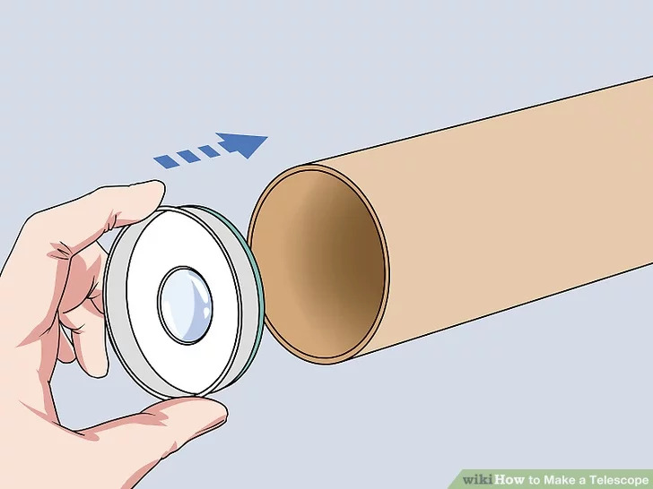
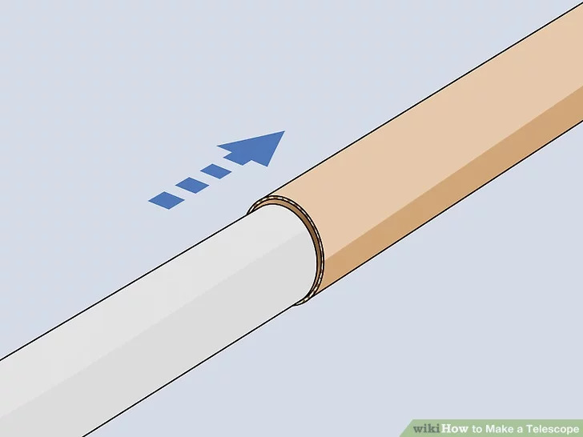

1
Gather materials: You'll need two lenses, a mailing tube that has an inside tube and an outside tube
(you can get this at the post office or office supply store; it should have a diameter of 2 inches and a length of 43.3 inches),
a coping saw, a box cutter, some strong glue and a drill.
- Lenses should be a different focal length. For best results get a concave-convex lens with a diameter of 49 mm, and a focal length of 1,350 mm and a plano-concave lens with a diameter of 49 mm, and a focal length of 152 mm.
- It's very easy to order lenses off the internet and they aren't very expensive. You can get the pair of lenses for about $16.
- The coping saw is the most effective for making clean, straight lines, but you can use any other kind of saw or cutting device if you need to.

2
Cut the outer tube in half. You'll need both sections, but the inner tube will act to space them out. The lenses will go in either section of the outer tube.

3
Cut 2 pieces from the inner tube of the mailing tube.These will be your spacers and they should be about 1 to 1.5 inches in diameter. Make sure you cut clean and straight with the coping saw (or other tool).
- The spacers hold the second lens in place at the end of the outer section of the mailing tube.

4
Make eye-hole in mailing tube cap.
Use the drill to apply light pressure to the middle of the cap to create your eye hole. Again, this will need to be as smooth and as clean as possible to create the best viewing results.

5
Drill holes on the outside of the large tube.
You'll need to make the holes where the lens is going to be placed in the outer tube, because the holes allow you to put glue into the inner part of the tube. Near the end of the inner tube is the best place, about an inch in.
- You'll also need to the make holes at the end of the outer tube for the eyepiece and the cap.

6
Glue eyepiece lens against removable cap.
The eyepiece lens is the plano-concave lens and the flat side needs to be against the cap. You'll glue through the holes you made and turn the lens to spread the glue. Press tube against lens until the glue is dry.

7
Cut off closed end of outer tube.
You'll end up sticking the inner tube into the outer tube through this hole.

8
Insert first spacer into outer tube.
The spacer will need to lie flat on the inside of the outer tube to hold the concave-convex lens in place. You'll need to drill the holes and put the glue in like you did with the eyepiece.

9
Insert lens and second spacer.
You'll need to make the holes, put the glue in and spread it around. Press firmly until the glue has dried.

10
You can slide the pieces as necessary to get the right focus.Since this is about 9x you should be able to see the moon's surface really well and even Saturn's rings. Anything else will be too far away for your telescope.
The project is finished, and you should now be able to use your telescope to gaze at the night sky.